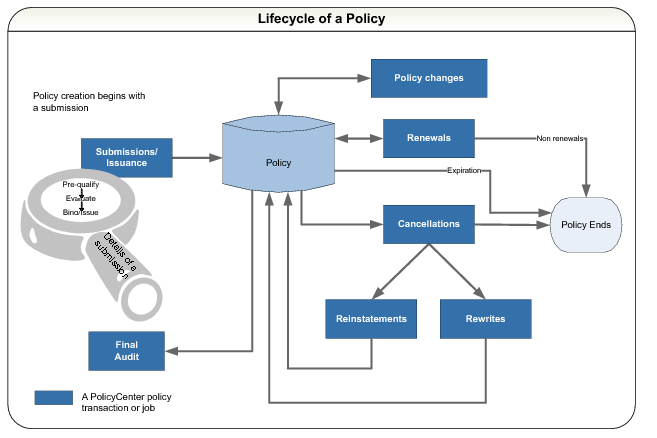

The Policy Lifecycle The core of PolicyCenter revolves around the policy. So it is helpful to understand the lifecycle of a policy, which includes policy transactions, within PolicyCenter. Note: This diagram does not attempt to display all the details in each policy transaction, but rather provides a high level view. You can find detailed descriptions for each policy transaction in subsequent topics.  Submissions The goal of the submission process is to create a policy and have the policyholder accept it. After entering the policyholder’s information, the producer gives a quote. If the policyholder agrees and accepts it, then the producer binds the policy and sends it out with the accompanying documentation. The producer also forwards the billing information to an external billing system (not shown in the diagram). Policy Changes Any changes to a policy can require additional evaluation on the part of an underwriter and result in a change to the premium. A typical change might include additions to the policy (such as adding drivers or cars) or changes to coverage limits and deductible amounts. Renewals The normal progression just before a policy expires is to renew it for another period of time – six to 12 months is typical. After PolicyCenter renews a policy, it returns the policy to maintenance mode until the policy changes, expires, cancels, or renews again. Cancellations and Reinstatements You can also cancel policies. Before the cancellation processes completes, a cancellation can be rescinded. An example is a producer mailing a cancellation notice for non-payment to a policyholder. If the policyholder corrects this by submitting payment before the cancellation date then the cancellation can be rescinded with no break in coverage. Reinstatements Reinstatements go hand in hand with cancellations and are a type of policy change that returns a canceled policy to in-force status. The policy is in-force as of the reinstatement date. The reinstatement removes the cancellation from the policy period since the period is no longer canceled. The expiration date remains the same. Rewrites When there are many errors are on a policy, it becomes necessary to rewrite it. Policies must first be canceled before being rewritten. Audits The audit policy transaction lets the carrier verify information about the policyholder so that they can determine the accuracy of premiums paid. The audit policy transaction provides final audit and premium reports. PolicyCenter supports only final audit for the workers’ compensation line of business. You set up the method of final audit (physical, voluntary, or by phone) when you create the workers’ compensation policy. With premium reports, the policyholder is billed for premium based on periodic requests for actual basis amounts, such as payroll. A deposit, usually a percentage of the estimated annual premium, is billed at the beginning of the policy. As each reporting period ends, the policyholder is billed based on the actual basis reported by them.